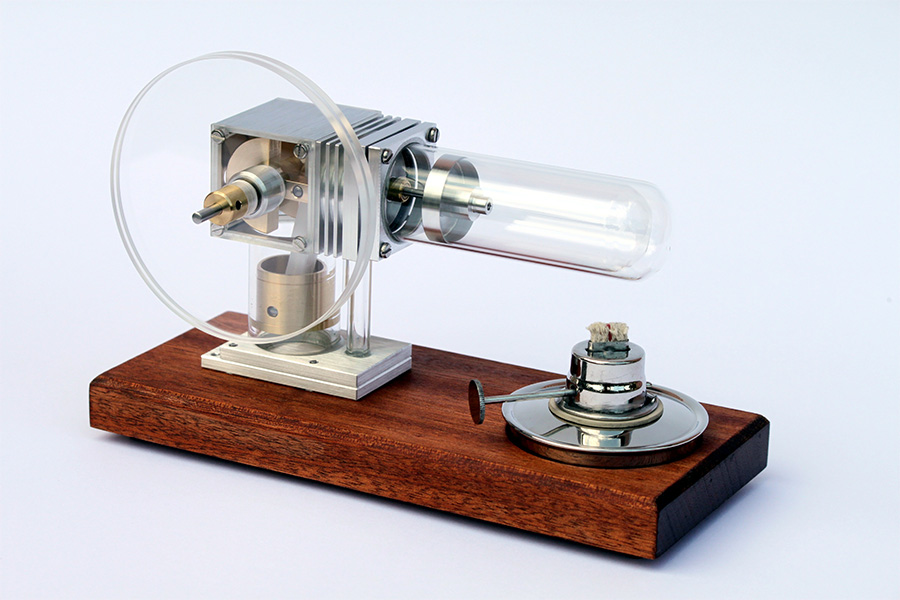

Welcome to
TS-dot Engineering!

TS-DOT ENGINEERING
What we do
We are a German-New Zealand company based in Auckland, New Zealand, with a general focus on the
- consulting in thermodynamic and heat transfer problems
- design of heat exchangers
- the development of Stirling machines
We offer assistance to clients who have an interest in Stirling technology and who want to develop their own systems tailor-made to their applications - starting from a basic idea up to and including the prototype stage.